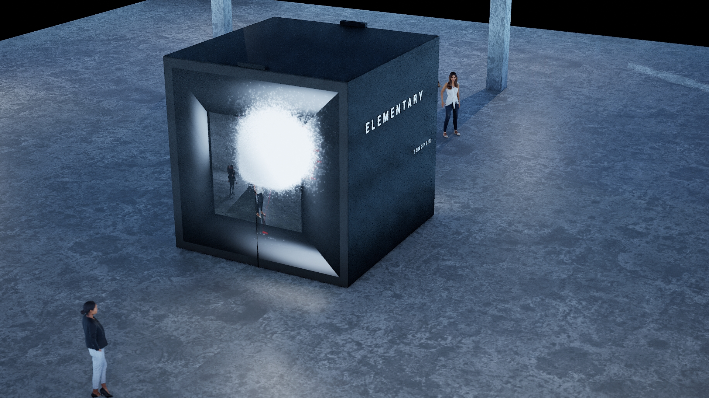

ELEMENTARY
Interactive audiovisual art installation
Elementary is an interactive audiovisual installation that merges the physical and virtual realms, embodying concepts of elemental forces and fundamental simplicity. The installation demonstrates a temporal phenomenon where two independent liquid simulations generate simultaneously, with only one visible until an unpredictable switch occurs.
The work "blurs the boundary between reality and the digital world," featuring real-time generative graphics appearing organic despite numerical foundations. Procedural computation produces both audio and visuals in a fully digital environment where participants can meaningfully interact.
The cubic iteration engages two participants simultaneously as "dual forces within the physics of a singular digital system," requiring mutual interaction to transform scale and physical laws.
Technical Specifications
Equipment:
- 2x LED or projection screens (approximately 4x4m each)
- 2x body tracking sensors
- 2x video cameras
- 1x PC
- 4x sound speakers
Software: Touchdesigner, Supercollider